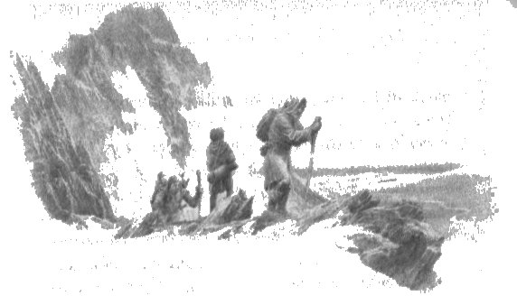

4
Kötü bir yol olan Taur-nu-Fuin’den geçerek geriye, Brethil’e ancak üç adam dönebildi sonunda; ve Hador’un kızı Glóredhel Haldir’in düştüğünü öğrenince üzüntüye kapıldı ve öldü.
Dor-lómin’e haber gitmedi. Huor’un karısı Rían çılgına dönerek yabana kaçtı; ama Mithrim’in Gri Elfleri ona yardım etti ve çocuğu Tuor doğduğunda ona baktılar. Ama Rían Haudh-en-Nirnaeth’e gitti, orada uzandı ve öldü.
Morwen Eledhwen, sessiz bir ızdırap içinde, Hithlum’da kaldı. Oğlu Túrin yalnızca dokuz yaşındaydı ve Morwen yine gebeydi. Kötü günler geçiriyordu. Doğulular sürü sürü gelmiş, Hador halkına zulmediyorlar, sahip oldukları her şeyi çalıyorlar, onları köleleştiriyorlardı. Húrin’in topraklarındaki, çalışabilen ya da herhangi bir amaca hizmet edebilecek bütün insanları, hatta küçük kızları ve oğlanları alıp götürmüşlerdi ve yaşlıları ya öldürmüşler, ya da açlıktan ölmek üzere yerlerinden sürmüşlerdi. Ama henüz Dor-lómin’in Hanımı’na el sürmeye ya da onu evinden çıkarmaya cesaret edemiyorlardı; çünkü aralarında, onun tehlikeli olduğuna, beyaz-şeytanlarla ilişkisi olan bir cadı olduğuna dair bir söylenti dolaşıyordu: çünkü elflere bu ismi vermişlerdi, onlardan nefret ediyorlardı, ama duydukları korku daha fazlaydı. Aynı sebepten, özellikle de o diyarın güneyinde, Eldar’ın büyük kısmının sığındığı dağlardan da korkuyor, oradan kaçınıyorlardı; ve Doğulular yıkıp yağmaladıktan sonra kuzeye çekildiler. Çünkü Húrin’in evi Dor-lómin’in güneydoğusunda duruyordu ve dağlar yakındı; Nen-Lalaith gerçekten de, yamacında dik bir geçit bulunan Amon Darthir’in gölgesindeki bir kaynaktan çıkıyordu. Zorlu kişiler bu geçidi kullanarak Ered Wethrin’i aşabilir, Glithui pınarlarının yanından inerek Beleriand’a girebilirdi. Ama Doğulular bunu bilmiyordu, Morgoth da henüz bilmiyordu; çünkü Fingolfin Evi ayakta olduğu sürece, bütün o diyar ona karşı güvendeydi ve hizmetkarlarının hiçbiri oraya girememişti. O, Ered Wethrin’in, hem kuzeyden kaçışa, hem de güneyden saldırıya karşı aşılmaz bir duvar olduğuna güveniyordu; gerçekten de, kanatsız varlıklar için Serech ile çok daha batıda, Dor-lómin’in Nevrast’la yürüdüğü yer arasında başka geçit yoktu.
Bu yüzden, öyle oldu ki ilk baskınlardan sonra Morwen kendi haline bırakıldı, ama yine de çevredeki koruluklarda saklanan insanlar vardı ve çok uzaklaşmak tehlikeliydi. Marangoz Sador ve birkaç yaşlı adam ve kadın hâlâ Morwen’in yanına sığınmış yaşıyordu ve Túrin’i avludan çıkarmıyorlardı. Ama Húrin’in evi kısa zamanda çürümeye başladı ve Morwen sıkı çalışsa da, fakirdi ve Húrin’in akrabası Aerin’in gizlice gönderdiği yardım olmasa aç kalırdı; çünkü Doğululardan Brodda adlı biri onu zorla karısı yapmıştı. Sadaka almak Morwen’e acı geliyordu; ama bu yardımı Túrin’in ve doğmamış çocuğunun hatırına ve kendi halkından geldiği için alıyordu, kendisi öyle diyordu. Çünkü Húrin’in topraklarındaki insanları, malları ve sığırları ele geçiren, onları kendi konutlarına götüren Brodda’ydı. Brodda cesur bir adamdı, ama Hithlum’a gelmeden önce kendi halkı arasında önemsiz biriydi; ve bu yüzden, servet aradığından, kendi türünden başkalarının istemediği topraklara el koymaya hazırdı. Morwen’i bir kez, bir baskın sırasında atını onun evine sürdüğünde görmüştü; ama onu görünce büyük bir dehşete kapılmıştı. Bir beyaz-şeytanın zalim gözlerine baktığını düşünmüştü ve içi, bir tür şerre yakalanacağı gibi ölümcül bir korku ile dolmuştu; ve Morwen’in evini yağmalamamış, Túrin’i bulmamıştı, aksi halde gerçek beyin vârisinin ömrü kısa olabilirdi.
Brodda, Hador’un halkına verdiği isimle, Samankafaları köle yapmış, onları Húrin’in evinin kuzeyinde ahşap bir malikane yapma işine koşmuştu; ve kölelerini sığır ağılına benzeyen kazıklı çitlerin arasına güdüyordu, ama onlara iyi göz kulak olmuyordu. Aralarında, yılmamış, kendilerini tehlikeye atarak Dor-lómin’in Hanımı’na yardım etmeye hazır olanlar bulunabiliyordu; ve Morwen onlardan gizli gizli, topraklarına dair haber alıyordu, ama getirdikleri haberlerde pek az umut vardı. Ama Brodda Aerin’i karısı yapmıştı, kölesi değil, çünkü kendi takipçileri arasında pek az kadın vardı ve hiçbiri Edain’in kızları ile boy ölçüşemezdi; ve o diyarda kendine bir beylik oluşturmayı, ondan sonra o beyliğe sahip çıkacak bir vâris edinmeyi umuyordu.
Morwen olanlar ve gelecek günlerde olabilecekler hakkında Túrin’e pek az şey söylüyordu; ve Túrin de sorularla annesinin sessizliğini bozmaya korkuyordu. Doğulular Dor-lómin’e ilk geldiğinde annesine şöyle demişti: “Babam ne zaman gelip, bu çirkin hırsızları kovalayacak? Neden gelmiyor?”
Morwen yanıt vermişti: “Bilmiyorum. Öldürülmüş ya da tutsak alınmış olabilir; uzaklara sürülmüş, bizi çevreleyen düşmanlan yarıp gelemiyor da olabilir.”
“O zaman, bence o öldü,” demişti Túrin ve annesinin önünde gözyaşlarına hakim olmuştu; “çünkü yaşıyor olsaydı, kimse dönüp bize yardım etmesine engel olamazdı.”
“Bunların ikisinin de doğru olduğunu sanmıyorum, oğlum,” dedi Morwen.
Zaman akıp giderken, Morwen’in yüreği, oğlu, Dor-lómin’in ve Ladros’un vârisi Túrin adına kararmaya başladı; çünkü daha fazla büyümeden, onun için, Doğulu insanların kölesi olmaktan daha iyi bir yazgı öngöremiyordu. Bu yüzden Húrin’in sözlerini hatırladı ve düşünceleri yine Doriath’a döndü; ve sonunda, elinden geliyorsa Túrin’i gizlice uzaklara göndermeye ve Kral Thingol’a onu barındırması için yalvarmaya karar verdi. Ve oturmuş, bunun nasıl yapılabileceğini düşünürken, zihninde Húrin’in sesini açıkça duydu: Hemen git! Beni bekleme! Ama çocuğunun doğumu yaklaşıyordu, yol zor ve tehlikeli olacaktı; ne kadar çok kişi giderse, kaçış umudu o kadar azalırdı. Ve yüreği hâlâ itiraf etmediği umutlarla kandırıyordu onu; en gizli düşünceleri Húrin’in ölmediğini seziyordu ve uykusuz gecelerde onun ayak seslerini bekliyor, ya da avluda onun atı Arrach’ın kişnemesini duyduğunu sanarak uyanıyordu. Dahası, oğlunun, o zamanlarda âdet olduğu üzere, bir başkasının evinde barındırılmasına razı olsa da, bir kralın bile olsa sadaka kabul eden konuğu olmayı gururu kabul etmiyordu. Bu yüzden Húrin’in sesini, ya da sesinin anısını inkar etti ve Túrin’in kaderinin ilk ipliği örülmüş oldu.
Morwen kararını Ağıt Yılı’nın güzü gelirken vermişti ve sonra acele etti; çünkü yolculuk zamanı kısaydı, ama kışın geçmesini beklerse Túrin’in yakalanacağından korkuyordu. Doğulular avlunun çevresinde dolanıyor, evi gözetliyordu. Bu yüzden, aniden Túrin’e şöyle dedi: “Baban gelmiyor. Bu yüzden sen gitmelisin, hem de yakında. O da böyle isterdi.”
“Gitmek mi!'” diye bağırdı Túrin. “Nereye gidelim? Dağları mı aşalım?”
“Evet,” dedi Morwen, “Dağların üzerinden güneye. Güneye -o tarafta umut olabilir. Ama biz demedim, oğlum. Sen gitmelisin, ama ben kalmalıyım.”
“Yalnız gidemem!” dedi Túrin. “Seni bırakmayacağım. Neden birlikte gitmeyelim?”
“Ben gidemem,” dedi Morwen. “Ama yalnız gitmeyeceksin. Gethron’u da yanında göndereceğim, belki Grithnir’i de.”
“Labadal’ı göndermeyecek misin?” dedi Túrin.
“Hayır, çünkü Sador topal,” dedi Morwen, “ve zorlu bir yol olacak. Ve sen oğlum olduğundan ve amansız günler yaşadığımızdan, yumuşak konuşmayacağım: yolda ölebilirsin. Sene ilerliyor. Ama kalırsan, daha kötü bir sonla karşılaşırsın: köle olursun. Erkek yaşına geldiğinde erkek olmak istiyorsan, söylediğimi cesaretle yapacaksın.”
“Ama seni Sador’la, kör Ragnir’le ve yaşlı kadınlarla yalnız bırakmış olacağım,” dedi Túrin. “Babam benim Hador’un vârisi olduğumu söylemedi mi? Vâris Hador’un evinde kalmalı, onu savunmalı. Keşke bıçağım hâlâ elimde olsaydı!”
“Vâris kalmalı, ama kalamaz,” dedi Morwen. “Ama bir gün geri dönebilir. Yürekli ol! İşler kötüye giderse ben de ardından geleceğim; gelebilirsem.”
“Ama yabanda kaybolmuşken beni nasıl bulacaksın?” dedi Túrin; ve aniden cesareti kırıldı, açık açık ağlamaya başladı.
“Ağlarsan, benden önce başkaları seni bulur,” dedi Morwen. “Ama nereye gideceğini biliyorum ve eğer oraya varırsan, orada kalırsan, elimden geliyorsa seni orada bulurum. Çünkü seni Doriath’a, Kral Thingol’a gönderiyorum. Köle olmaktansa, bir kralın konuğu olmayı tercih etmez misin?”
“Bilmiyorum,” dedi Túrin. “Kölenin ne olduğunu bilmiyorum.”
“Öğrenmeyesin diye gönderiyorum seni uzaklara,” diye yanıt verdi Morwen. Sonra Túrin’i önüne çekti ve orada bir bilmece okumaya çalışıyormuş gibi, gözlerinin içine baktı. “Zor, Túrin, oğlum,” dedi sonunda. “Hem de yalnızca senin için değil. Kötü günlerde senin için en iyisinin ne olduğuna karar vermek benim için de güç. Ama doğru olduğunu düşündüğüm şeyi yapıyorum; çünkü, bana kalan en değerli şeyden başka neden ayrılayım?”
Bir daha bundan bahsetmediler ve Túrin üzülmüş, şaşalamıştı. Sabahleyin, ateş için odun kesmekte olan Sador’u bulmaya gitti, koruluklara gitmeye cesaret edemedikleri için pek az odunları vardı; ve Sador’u koltuk değneğine dayanmış, bitmemiş halde bir köşeye tıkılmış olan Húrin’in büyük sandalyesine bakarken buldu. “Gitmeli,” diyordu Sador, “çünkü bugünlerde yalnızca acil ihtiyaçlarımızı karşılayabiliyoruz.”
“Daha kırma,” dedi Túrin. “Belki babam eve döner ve o zaman, o yokken onun için yaptığın şeyi görünce memnun olur.”
“Sahte umutlar, korkulardan daha tehlikelidir,” dedi Sador, “ve bu kış bizi sıcak tutamazlar.” Sandalyedeki oymalara dokundu ve içini çekti. “Zamanımı boşa harcamışım,” dedi, “ama hoş saatlerdi yine de. Ama bu tür şeyler kısa ömürlüdür; ve asıl amaç onları yaparken alınan zevk, sanırım. Artık armağanını sana geri versem de olur.”
Túrin elini uzattı, ama çabucak geri çekti. “Bir erkek verdiği armağanları geri almaz,” dedi.
“Ama eğer bana aitse, dilediğim gibi veremez miyim!'” dedi Sador.
“Evet,” dedi Túrin, “benden başka birine. Ama neden onu vermek istiyorsun!'”
"Onu, uğraşmaya değer bir iş için kullanma umudum kalmadı,” dedi Sador. “Gelecek günlerde, Labadal için köle işi dışında iş olmayacak.”
“Ama köle nedir?” dedi Túrin.
“Eskiden insan olan, ama hayvan muamelesi gören bir insan,” diye yanıt verdi Sador. “Ancak ölmeyecek kadar beslenen, ancak çalışması için canlı tutulan, ancak acı ya da ölüm korkusuyla çalışan bir insan. Ve bu soyguncular, sırf eğlenmek için ona acı verebilir ya da onu öldürebilir. Hızlı ayaklılardan bazılarını seçtiklerini ve köpekler yardımıyla onları avladıklarını duydum. Bizim Latif Halk’tan öğrendiğimizden daha hızlı bir biçimde, onlar orklardan öğrendiler.”
“Şimdi daha iyi anlıyorum,” dedi Túrin.
“Bu tür şeyleri bu kadar erken anlaman çok yazık,” dedi Sador; sonra Túrin’in yüzündeki tuhaf ifadeyi görünce: “Şimdi neyi anlıyorsun?”
“Annemin beni neden uzaklara gönderdiğini,” dedi Túrin ve gözleri yaşlarla doldu.
“Ah!” dedi Sador ve kendi kendine mırıldandı: “Ama neden bu kadar gecikti?” Sonra Túrin’e dönerek şunu söyledi: “Bu bana ağlanacak bir haber gibi gelmedi. Ama annenin görüşlerini Labadal’a ya da bir başkasına söylememelisin. Bugünlerde bütün duvarların ve çitlerin kulakları var, hem de latif kafalarda büyüyen kulaklar değil.”
“Ama biriyle konuşmak zorundayım!” dedi Túrin. “Sana her zaman bir şeyler anlattım. Seni bırakmak istemiyorum, Labadal. Bu evi ve annemi bırakmak istemiyorum.”
“Ama bırakmazsan,” dedi Sador, “şimdi anlıyor olman gerektiği gibi, Hador Evi kısa zamanda, sonsuza dek son bulur. Labadal da senin gitmeni istemiyor; ama Húrin’in hizmetkarı Sador, Húrin’in oğlu Doğuluların ulaşamayacağı bir yerde olduğu için mutlu olacak. Vah vah, çaresi yok: veda etmeliyiz. Bıçağımı ayrılık hediyesi olarak almaz mısın artık?”
“Hayır!” dedi Túrin. “Elflere, Doriath Kralı’na gideceğimi söylüyor annem. Orada, ona benzer başka şeyler alabilirim. Ama sana başka armağan gönderemem, Labadal. Çok uzaklarda ve yapayalnız olacağım.” Sonra Túrin ağladı; ama Sador ona şöyle dedi: “Bak şimdi! Húrin’in oğlu nerede? Çünkü, pek de uzun olmayan bir süre önce onun şöyle dediğini duymuştum: Elimden gelen en kısa zamanda, bir elf kralının yanına asker gireceğim."
Bunun üzerine Túrin ağlamayı bıraktı ve şöyle dedi: “Pekala; bunlar Húrin’in oğlunun sözleriyse, o sözleri tutmalı ve gitmeli. Ama, ne zaman bunu yapacağım, şunu yapacağım desem, yapma zamanı geldiğinde çok farklı görünüyor. Şimdi gitmek istemiyorum. Bir daha bu tür şeyler söylememeye dikkat etmeliyim.”
“Gerçekten de en iyisi bu olur,” dedi Sador. “Çoğu kişi aynı öğüdü verir, ama pek az kişi öğrenir. Bırak, görünmeyen günler öyle kalsın. Bugün yeterinden de fazla.”
Sonra Túrin yolculuk için hazırlandı ve annesine veda etti ve iki yoldaşı ile birlikte gizlice oradan ayrıldı. Ama Túrin’in geri dönüp babasının evine bakmasını istediklerinde, ayrılık acısı kılıç gibi saplandı içine ve haykırdı: “Morwen, Morwen, seni bir daha ne zaman göreceğim?” Eşikte durmakta olan Morwen, ağaçlıklı tepelerdeki bu feryadı duydu ve kapı direğini öyle sıkı kavradı ki parmaklan yırtıldı. Bu, Túrin’in acılarının ilkiydi.
Túrin gittikten sonra, senenin başlarında, Morwen çocuğunu doğurdu ve ona Niënor, yani Yas adını verdi; ama o doğduğunda Túrin çok uzaklardaydı. Yolu uzun ve şer doluydu, çünkü Morgoth’un gücü çok uzaklarda dolanıyordu; ama Túrin’in rehberleri, Hador’un günlerinde genç olan Gethron ve Grithnir’di ve şimdi yaşlanmış olsalar da cesurdular ve araziyi çok iyi tanıyorlardı, çünkü eski günlerde Beleriand’da sık sık yolculuk etmişlerdi. Böylece, kader ve cesaret eseri, Gölgeli Dağlardan aştılar ve Sirion Vadisi’ne inerek Brethil Ormanı’na girdiler; ve sonunda yorgun argın Doriath sınırlarına ulaştılar. Ama orada şaşırdılar ve kraliçenin labirentlerine düştüler, ve kaybolarak, yiyecekleri tükenene dek patikasız ağaçlıklarda dolandılar. Orada ölüme çok yaklaştılar, çünkü kuzeyden gelen kış soğuktu; ama Túrin’in sonu bu kadar kolay gelmedi. Ümitsizlik içinde yatarken bir boru sesi duydular. Sağlamyaylı Beleg o bölgede avlanıyordu, çünkü her zaman Doriath Bataklıklarında yaşardı ve o günlerin en iyi ormancısıydı. Beleg onların feryatlarını duydu ve yanlarına geldi ve onlara yiyecek içecek verirken isimlerini ve nereden geldiklerini öğrendi ve içi hayret ve acıma ile doldu. Ve Túrin’e sevgiyle baktı, çünkü Túrin annesinin güzelliğini ve babasının gözlerini almıştı ve sağlam yapılı ve güçlüydü.
“Kral Thingol’dan ne lütuf isterdin?” dedi Beleg oğlana.
“Şövalyelerinden biri olup, Morgoth’a karşı at sürmek ve babamın intikamını almak,” dedi Túrin.
“Yaşın büyüdüğünde, bu pekala olabilir,” dedi Beleg. “Çünkü henüz küçük olmana rağmen, yiğit bir adamın hamuruna sahipsin, eğer bu mümkün olursa, Sadık Húrin’in oğlu olmaya layıksın.” Çünkü Húrin ismi tüm elf diyarlarında saygıyla anılırdı. Dolayısıyla, Beleg memnunlukla gezginlerin rehberi oldu ve onları o sırada başka avcılarla birlikte kaldığı kulübeye götürdü ve Menegroth’a haberci gönderilirken orada konuk edildiler. Ve Thingol ile Melian’ın Húrin’in oğlunu ve koruyucularını kabul edeceği haberi geldiğinde, Beleg onları gizli yollardan Saklı Krallık’a götürdü.
Böylece, Túrin Esgalduin üzerindeki büyük köprüye geldi ve Thingol’un malikanesinin kapılarından geçti; ve çocuk haliyle, o zamana dek Beren dışında hiçbir ölümlü insanın görmediği Menegroth’un harikalarına baktı. Sonra Gethron Morwen’in mesajını Thingol ile Melian’a aktardı; ve Thingol onları merhametle karşıladı ve insanların en kudretlisi Húrin’in ve kandaşı Beren’in şerefine, Túrin’i dizine oturttu. Ve bunu görenler hayret ettiler, çünkü bu, Thingol’un Túrin’i evlat edindiğinin işaretiydi; ve o zamanlarda krallar bunu yapmazdı, elf beyleri bir insanı asla evlat edinmezdi. Sonra Thingol, Túrin’e şöyle dedi: “Bundan böyle, Húrin’in oğlu, evin burası olacak; ve tüm yaşamın boyunca, oğlum sayılacaksın, her ne kadar insan olsanda. Ölümlü insanların ölçütlerinin ötesinde bilgelik öğretilecek sana ve elf silahları yerleştirilecek ellerine. Bir ihtimal, öyle bir zaman gelir ki, babanın Hithlum’daki yurdunu yeniden ele geçirirsin; ama şimdilik burada sevgi içinde yaşa.”
Túrin’in Doriath’taki hayatı böyle başladı. Koruyucuları Gethron ile Grithnir bir süre onunla kaldı, ama Dor-lómin’deki hanımlarının yanına dönmeyi arzuluyorlardı. Sonra Grithnir yaşlılığın ve hastalığın pençesine düştü ve ölene dek Túrin’in yanında kaldı; ama Gethron ayrıldı ve Thingol ona rehberlik edecek, onu koruyacak eşlikçiler göndereli ve bu eşlikçiler Morwen’e Thingol’dan mesaj götürdüler. Sonunda Húrin’in evine vardılar ve Morwen Túrin’in Thingol’un malikanesinde şerefle karşılandığını öğrenince ızdırabı hafifledi; elfler ona aynı zamanda, Melian’dan zengin armağanlar ve Thingol’un adamları ile birlikte Doriath’a gitmesi çağrısı getirdiler. Çünkü Melian bilge ve basiretliydi ve bu şekilele, Morgoth’un zihninde hazırlanan şerri önlemeyi umuyordu. Ama Morwen evinden ayrılmak istemedi, çünkü gönlü hâlâ değişmemişti ve gururu hâlâ yüksekti; dahası, Niënor henüz kollarında bir bebekti. Bu yüzden Doriath Elflerini teşekkürleri ile geri yolladı ve fakirliğini saklayarak, kalan son küçük altın eşyaları onlara armağan etti; ve onlardan Hador’un Miğferi’ni Thingol’a götürmelerini istedi. Ama Túrin Thingol’un habercilerinin dönüşünü dört gözle bekliyordu; ve onlar yalnız dönünce koruluklara kaçtı ve ağladı, çünkü Melian’ın çağrısını biliyordu ve Morwen’in geleceğini ummuştu. Bu, Túrin’in ikinci acısıydı. Haberciler Morwen’in yanıtını aktardıkları zaman, Melian onun aklından geçenleri anlayarak ona acıdı; ve sezdiği kaderin bu kadar kolay önlenemeyeceğini gördü.
Hador’un Miğferi Thingol’un ellerine verildi. O miğfer gri çelikten yapılmıştı ve altınla süslenmişti, üzerine zafer rünleri oyulmuştu. Onda, takanı yaralanmaktan ve ölümden koruyan bir güç vardı, çünkü ona çarpan kılıç kırılıyor, onu vuran ok sekiyordu. Eserleri ile ünlü Nogrod’un demircisi Telchar tarafından yapılmıştı. Cücelerin demirhanelerinde kullandığı, gözlerini koruyan miğferlerinde olduğu gibi bir siperliği vardı ve onu takanın yüzü tüm görenlerin yüreğine korku salardı, ama kendisi ok ve ateşe karşı korunaklıydı. Bir meydan okuma jesti olarak, sorgucuna ejderha Glaurung’un imgesi yaldızla işlenmişti; çünkü Glaurung’un Morgoth’un kapılarından ilk çıktığı zamandan kısa süre sonra yapılmıştı. Hador ve ardından Galdor, o miğferi savaşta sık sık takmıştı; ve onun savaşın ortasında yükseldiğini gördüklerinde, Hithlum ordusu yüreklenmiş ve haykırmıştı: “Dor-lómin’in Ejderhası, Angband’ın altın-solucanından daha kıymetlidir!” Ama Húrin Ejderha-miğferini kolay kolay takmazdı ve her durumda onu kullanmazdı çünkü, “Düşmanlarıma kendi yüzümle bakmayı tercih ederim,” derdi. Yine de, miğferi evinin en büyük aile yadigarlarından biri sayardı.
O zamanlarda Thingol’un Menegroth’taki derin silahhaneleri büyük bir silah bolluğu ile doluydu: balık pulları şeklinde yapılmış, ay ışığı altındaki su gibi parlayan metal zırhlar; bizzat Telchar ya da onun üstadı ihtiyar Gamil Zirak, ya da daha da yetenekli elf demircileri tarafından yapılmış kılıçlar ve baltalar, kalkanlar ve miğferler. Bazılarını armağan olarak Valinor’dan almıştı ve dünya tarihi boyunca ondan daha büyük zanaatkar çıkmayan Fëanor’un ustalık zamanlarında yapılmıştı. Ama Thingol Hador’un Miğferini, silahları kıtmış gibi tuttu ve nazik sözler etti: “Húrin’in atalarının taşıdığı bu miğferi takan baş, gururlu bir baştı.”
Sonra aklına bir fikir geldi ve Túrin’i çağırdı ve ona, Morwen’in oğluna kudretli bir şeyi, atalarının yadigarını gönderdiğini söyledi. “Kuzeyin Ejder-başını al,” dedi, “ve zamanı geldiğinde hakkıyla tak.” Ama Túrin henüz miğferi kaldıramayacak kadar küçüktü ve yüreğindeki keder yüzünden ona önem vermedi.